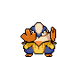
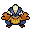

Pokédex / #297

Hariyama #297
Fighting
It stomps on the ground to build power. It can send a 10-ton truck flying with a straight-arm punch.
Generation 3 · Hoenn

Stats
| Attack | 120 | |
|---|---|---|
| Defense | 60 | |
| Sp. Atk | 40 | |
| Sp. Def | 60 |
In the wild
| Wild level | 40–50 |
|---|---|
| HP | 144 |
| Experience | 10 |
| Egg groups | Human-Like |
Evolution
- Evolves from Makuhita at level 40.
Moves
| Level | Move | Type | Category | Power | Energy | Cooldown | Effect | |
|---|---|---|---|---|---|---|---|---|
| 1 | Tackle | Normal | Physical | 15 | 15 | 1s | Tackle is one of the most common and basic moves a Pokemon learns. It deals damage with no additional effects. | |
| 5 | Arm Thrust | Fighting | Physical | 15 | 50 | 10s | The user lets loose a flurry of open-palmed arm thrusts that hit two to five times in a row. | |
| 10 | Force Palm | Fighting | Physical | 60 | 60 | 9s | Force Palm inflicts damage and has a 30% chance of paralyzing the target. | |
| 15 | Fake Out | Normal | Physical | 40 | 40 | 20s | Fake Out inflicts damage and makes the target flinch. | |
| 20 | Vital Throw | Fighting | Physical | 70 | 70 | 11s | Vital Throw deals damage and ignores changes to the Accuracy and Evasion stats. | |
| 25 | Knock Off | Dark | Physical | 65 | 100 | 20s | The move does more damage if the target has a held item. | |
| 30 | Smelling Salts | Normal | Physical | 70 | 90 | 16s | Smelling Salts deals damage. Its base power will double against a paralyzed target, but it will also cure the target of paralysis. | |
| 35 | Sand-Attack | Ground | Status | – | 25 | 10s | Sand-Attack lowers the target's Accuracy by one stage. | |
| 45 | Wake-Up Slap | Fighting | Physical | 70 | 75 | 9s | Wake-Up Slap deals damage and will have double the power when the target is sleeping. It will also wake the target up. | |
| 50 | Seismic Toss | Fighting | Physical | 80 | 80 | 12s | Seismic Toss deals damage and has no secondary effect. | |
| 55 | Close Combat | Fighting | Physical | 120 | 120 | 18s | Close Combat deals damage but lowers the user's Defense and Special Defense by one stage each after attacking. | |
| 60 | Reversal | Fighting | Physical | 90 | 90 | 14s | Reversal deals more damage the lower the target HP. | |
| 65 | Cross Chop | Fighting | Physical | 100 | 100 | 15s | Cross Chop deals damage and has an increased critical hit ratio. |
Field abilities
SurfStrengthRock Smash
Special abilities
GutsThick Fat
Egg moves
Bullet PunchChip AwayCounterDetectDynamic PunchFeintFaint AttackFocus PunchRevengeWide Guard
Technical machines
Brick BreakBulk UpDouble TeamEarthquakeFocus PunchHyper BeamPoison JabProtectRain DanceRestRock SlideRock TombSubstituteToxic
Drops
| Item | Amount | Chance | |
|---|---|---|---|
| box gloves | 1 | 17.5% | |
| bandage | 1 | 17.5% | |
 | hariyama doll | 1 | 0.1% |
| Fist Plate | 1 | 0.05% | |
| held black belt | 1 | 0.02% |